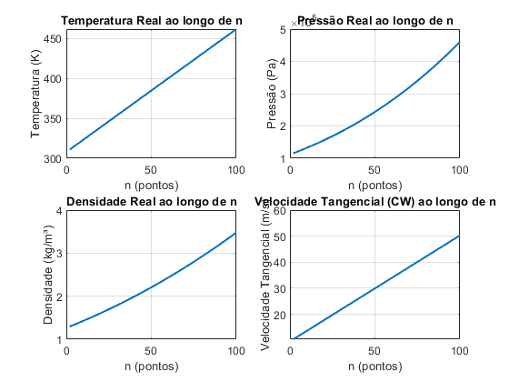
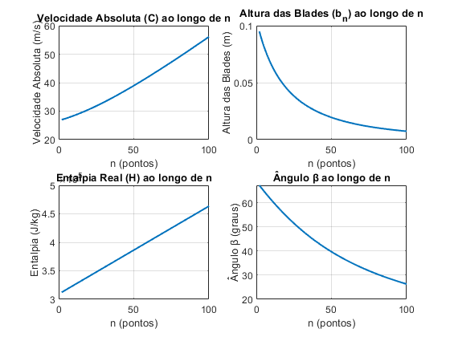
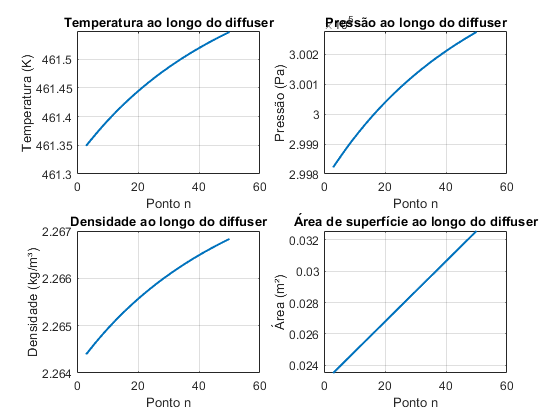
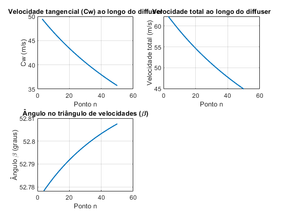

Contents
Impeller e Diffuser
Este script calcula as propriedades termodinâmicas e geométricas ao longo de um impeller e diffuser.
% Limpeza do ambiente clc; close all; clearvars;
Constantes fornecidas
RP = 3; Mass_Flow_Rate = 2.0; RPM = 1000; z = 50; Raio_interior = 10e-2; Raio_exterior = 50e-2; eta_c = 0.75; eta_diffuser = 0.75; gamma = 1.4; T_inicial = 309.34; Densidade_ar_inicial = 1.28; R = 287; P_inicial = 1.0e5; % Pressão de estagnação cp = gamma * R / (gamma - 1); cv = cp / gamma; % Fator de Slip (σ) sigma = 1 - (0.63 * pi / z); % Velocidade angular (W) W = 2 * pi * RPM / 60; % rad/s % Número de pontos no Impeller n = 100; r = linspace(Raio_interior, Raio_exterior, n); % Raio discretizado dr = (Raio_exterior - Raio_interior) / n; % Incremento radial % Inicialização de arrays para armazenar resultados do Impeller T_real = zeros(1, n); P_real = zeros(1, n); rho_real = zeros(1, n); CW = zeros(1, n); C = zeros(1, n); H_real = zeros(1, n); b_n = zeros(1, n); Ca = zeros(1, n); beta = zeros(1, n);
Condições iniciais do Impeller
T_real(1) = T_inicial; % Temperatura inicial real rho_real(1) = Densidade_ar_inicial; P_real(1) = rho_real(1) * R * T_real(1); H_real(1) = cp * T_real(1); % Entalpia inicial b_n(1) = 0.10; % Altura da blade no primeiro ponto (m) Ca(1) = Mass_Flow_Rate / (rho_real(1) * 2 * pi * b_n(1) * Raio_interior); % Pressão final e temperatura isentrópica final P_isentropic_final = P_inicial * RP; % Pressão final isentrópica T_isentropic_final = T_inicial * (P_isentropic_final / P_inicial)^((gamma - 1) / gamma); % Temperatura isentrópica final T_final_real = T_inicial + (T_isentropic_final - T_inicial) / eta_c; % Temperatura real final considerando eficiência H_final = cp * T_final_real; % Entalpia final calculada a partir da temperatura final
Loop para calcular as variáveis em cada ponto do Impeller
for i = 2:n % Atualizar raio raio_atual = r(i); % Velocidade periférica (U) U = W * raio_atual; % U = W * r % Velocidade tangencial (CW) CW(i) = U * sigma; % Velocidade absoluta (C) C(i) = sqrt(CW(i)^2 + Ca(1)^2); % Atualizar entalpia específica linearmente H_real(i) = H_real(1) + (H_final - H_real(1)) * (i - 1) / (n - 1); % Atualizar temperatura real a partir da entalpia T_real(i) = H_real(i) / cp; % Atualizar pressão real a partir da relação isentrópica P_real(i) = P_real(i-1) * (T_real(i) / T_real(i-1))^(gamma / (gamma - 1)); % Atualizar densidade real rho_real(i) = P_real(i) / (R * T_real(i)); % Atualizar altura da blade b_n(i) = Mass_Flow_Rate / (rho_real(i) * Ca(1) * 2 * pi * r(i)); % Calcular ângulo do triângulo de velocidades beta(i) = atan(Ca(1) / CW(i)); end
Gráficos do Impeller
Primeiro conjunto de gráficos (Temperatura, Pressão, Densidade, Velocidade Tangencial)
figure; subplot(2, 2, 1); plot(2:n, T_real(2:n), 'LineWidth', 1.5); grid on; title('Temperatura Real ao longo de n'); xlabel('n (pontos)'); ylabel('Temperatura (K)'); subplot(2, 2, 2); plot(2:n, P_real(2:n), 'LineWidth', 1.5); grid on; title('Pressão Real ao longo de n'); xlabel('n (pontos)'); ylabel('Pressão (Pa)'); subplot(2, 2, 3); plot(2:n, rho_real(2:n), 'LineWidth', 1.5); grid on; title('Densidade Real ao longo de n'); xlabel('n (pontos)'); ylabel('Densidade (kg/m³)'); subplot(2, 2, 4); plot(2:n, CW(2:n), 'LineWidth', 1.5); grid on; title('Velocidade Tangencial (CW) ao longo de n'); xlabel('n (pontos)'); ylabel('Velocidade Tangencial (m/s)'); % Segundo conjunto de gráficos (Velocidade Absoluta, Altura das Blades, Entalpia, Ângulo β) figure; subplot(2, 2, 1); plot(2:n, C(2:n), 'LineWidth', 1.5); grid on; title('Velocidade Absoluta (C) ao longo de n'); xlabel('n (pontos)'); ylabel('Velocidade Absoluta (m/s)'); subplot(2, 2, 2); plot(2:n, b_n(2:n), 'LineWidth', 1.5); grid on; title('Altura das Blades (b_n) ao longo de n'); xlabel('n (pontos)'); ylabel('Altura das Blades (m)'); subplot(2, 2, 3); plot(2:n, H_real(2:n), 'LineWidth', 1.5); grid on; title('Entalpia Real (H) ao longo de n'); xlabel('n (pontos)'); ylabel('Entalpia (J/kg)'); subplot(2, 2, 4); plot(2:n, beta(2:n) * (180 / pi), 'LineWidth', 1.5); grid on; title('Ângulo β ao longo de n'); xlabel('n (pontos)'); ylabel('Ângulo β (graus)'); 
Diffuser
m_dot = Mass_Flow_Rate;
d_n = 50;
k = gamma;
% Inicialização de arrays para o Diffuser
T_diffuser = zeros(1, d_n);
P_diffuser = zeros(1, d_n);
rho_diffuser = zeros(1, d_n);
Cr_diffuser = zeros(1, d_n);
C_total = zeros(1, d_n);
angulo_beta = zeros(1, d_n);
Cw_diffuser = zeros(1, d_n);
diffuser_area = zeros(1, d_n);
Diametro = zeros(1, d_n);
Condições iniciais do Diffuser (saída do Impeller)
T_diffuser(1) = T_real(end); P_diffuser(1) = 3.00e5; % Pressão inicial no diffuser rho_diffuser(1) = rho_real(end); Cr_diffuser(1) = Ca(1); % Velocidade axial inicial do diffuser Cw_diffuser(1) = CW(end); diffuser_area(1) = pi * Raio_exterior^2; Diametro(1) = 2 * Raio_exterior; b_d = b_n(end); C_total(1) = sqrt(Cr_diffuser(1)^2 + Cw_diffuser(1)^2); T_estagnacao = T_diffuser(1) + C_total(1)^2 / (2 * cp); % Condições finais P_isentropica_final = 2.714e5; Cr_diffuser(d_n) = 30; C_total(d_n) = sqrt(Cw_diffuser(d_n)^2 + Cr_diffuser(d_n)^2); T(50) = T_estagnacao - C_total(d_n)^2 / (2 * cp); rho_diffuser(d_n) = P_isentropica_final / (R * T(50)); diffuser_area(d_n) = m_dot / (Cr_diffuser(d_n) * rho_diffuser(d_n)); diffuser_area(d_n) = pi * Diametro(d_n) * b_d; it = 0; erro_relativo = 1; Cw_diffuser(d_n) = 150; % Valor final inicial % Iteração para ajustar Cw_diffuser no ponto final do Diffuser while (1) Cw_diffuser_iterativo = Cw_diffuser(d_n); % Valor atual de Cw_diffuser no ponto final C_total(d_n) = sqrt(Cw_diffuser_iterativo^2 + Cr_diffuser(d_n)^2); T(50) = T_estagnacao - C_total(d_n)^2 / (2 * cp); rho_diffuser(d_n) = P_isentropica_final / (R * T(50)); diffuser_area(d_n) = m_dot / (Cr_diffuser(d_n) * rho_diffuser(d_n)); Diametro(d_n) = diffuser_area(d_n) / (pi * b_d); % Atualizar diâmetro if (erro_relativo < 0.01) break; end Cw_diffuser(d_n) = (Cw_diffuser(1) * Diametro(1)) / Diametro(d_n); erro_relativo = abs((Cw_diffuser(d_n) - Cw_diffuser_iterativo) / Cw_diffuser(d_n)); it = it + 1; if (it > 100) fprintf('Não convergiu\n'); break; end end % Linearizar diâmetro ao longo do diffuser Diametro = linspace(Diametro(1), Diametro(d_n), d_n);
Iterações para calcular os valores em cada ponto do Diffuser
for i = 2:d_n % Iteração para Cw_diffuser it_cw = 0; erro_relativo_cw = 1; while (1) Cw_diffuser_iterativo = Cw_diffuser(i - 1); C_total(i) = sqrt(Cw_diffuser_iterativo^2 + Cr_diffuser(i - 1)^2); T_diffuser(i) = T_estagnacao - C_total(i)^2 / (2 * cp); rho_diffuser(i) = P_diffuser(i - 1) / (R * T_diffuser(i-1)); diffuser_area(i) = pi * Diametro(i) * b_d; if (erro_relativo_cw < 0.01) break; end Cw_diffuser(i) = (Cw_diffuser(1) * Diametro(1)) / Diametro(i); erro_relativo_cw = abs((Cw_diffuser(i) - Cw_diffuser_iterativo) / Cw_diffuser(i)); it_cw = it_cw + 1; if (it_cw > 100) fprintf('Não convergiu para Cw_diffuser no ponto %d\n', i); break; end end % Iteração para Cr_diffuser it_cr = 0; erro_relativo_cr = 1; while (1) Cr_diffuser_iterativo = Cr_diffuser(i - 1); C_total(i) = sqrt(Cw_diffuser(i)^2 + Cr_diffuser_iterativo^2); T_diffuser(i) = T_estagnacao - C_total(i)^2 / (2 * cp); rho_diffuser(i) = P_diffuser(i - 1) / (R * T_diffuser(i-1)); diffuser_area(i) = pi * Diametro(i) * b_d; Cr_diffuser(i) = m_dot / (rho_diffuser(i) * diffuser_area(i)); erro_relativo_cr = abs((Cr_diffuser(i) - Cr_diffuser_iterativo) / Cr_diffuser(i)); it_cr = it_cr + 1; if (erro_relativo_cr < 0.01 || it_cr > 100) break; end end % Atualizar pressão e densidade usando eficiência e isentrópica P_diffuser(i) = P_diffuser(i - 1) * (1 + eta_c * ((C_total(i - 1)^2 - C_total(i)^2) / (2 * cp * T_diffuser(i - 1)))); T_diffuser(i) = T_diffuser(i - 1) * (P_diffuser(i) / P_diffuser(i - 1))^((k - 1) / k); rho_diffuser(i) = P_diffuser(i) / (R * T_diffuser(i)); % Calcular ângulo no triângulo de velocidades angulo_beta(i) = atan(Cw_diffuser(i) / Cr_diffuser(i)) * (180 / pi); end
Gráficos do Diffuser
Subplots 1: Temperatura, Pressão, Densidade, Área de Superfície
figure; subplot(2, 2, 1); plot(3:d_n, T_diffuser(3:end), 'LineWidth', 1.5); title('Temperatura ao longo do diffuser'); xlabel('Ponto n'); ylabel('Temperatura (K)'); grid on; subplot(2, 2, 2); plot(3:d_n, P_diffuser(3:end), 'LineWidth', 1.5); title('Pressão ao longo do diffuser'); xlabel('Ponto n'); ylabel('Pressão (Pa)'); grid on; subplot(2, 2, 3); plot(3:d_n, rho_diffuser(3:end), 'LineWidth', 1.5); title('Densidade ao longo do diffuser'); xlabel('Ponto n'); ylabel('Densidade (kg/m³)'); grid on; subplot(2, 2, 4); plot(3:d_n, diffuser_area(3:end), 'LineWidth', 1.5); title('Área de superfície ao longo do diffuser'); xlabel('Ponto n'); ylabel('Área (m²)'); grid on; % Subplots 2: Velocidade Tangencial, Velocidade Total, Ângulo β figure; subplot(2, 2, 1); plot(3:d_n, Cw_diffuser(3:end), 'LineWidth', 1.5); title('Velocidade tangencial (Cw) ao longo do diffuser'); xlabel('Ponto n'); ylabel('Cw (m/s)'); grid on; subplot(2, 2, 2); plot(3:d_n, C_total(3:end), 'LineWidth', 1.5); title('Velocidade total ao longo do diffuser'); xlabel('Ponto n'); ylabel('Velocidade total (m/s)'); grid on; subplot(2, 2, 3); plot(4:d_n, angulo_beta(4:end), 'LineWidth', 1.5); % Saltar o ponto 3 title('Ângulo no triângulo de velocidades (\beta)'); xlabel('Ponto n'); ylabel('Ângulo \beta (graus)'); grid on; 